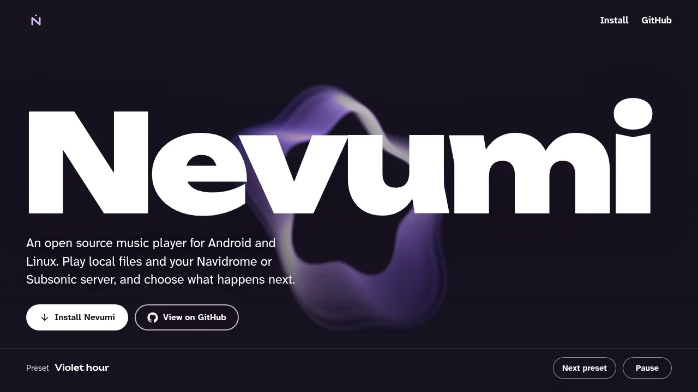
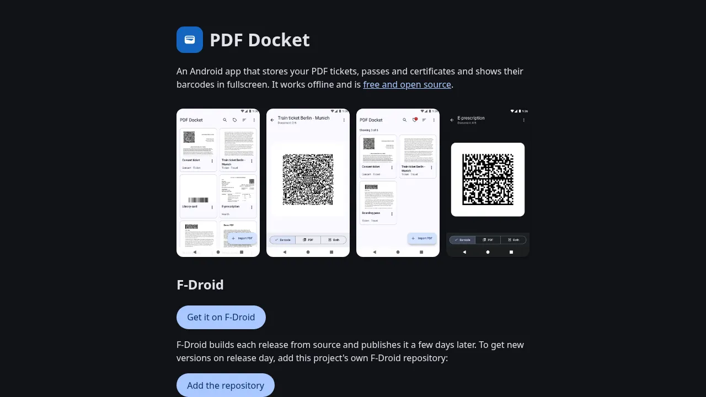

About me
I'm Nico, a full-stack developer and privacy/open-source enthusiast.
My main focus is on building web apps.
My main focus is on building web apps.
Links
Projects

Highly customizable YouTube client with privacy in mind. Can also play from all yt-dlp supported sites.

Music player for Android and Linux with local playback and Navidrome/Subsonic support

Vegan product check app (all sites and types of products) for mobile and browsers

Android app that stores PDF tickets and passes and shows their barcodes in fullscreen

I maintain some packages on the AUR

My installation instructions and guide for Arch Linux

Universal cross-platform soundboard
Smaller projects
sc-gate-dl
Downloads and tags SoundCloud tracks unlocked via download gates
 plasma-bluetooth-quick-connect
KDE Plasma widget to connect a Bluetooth device in one click and see its battery
oxygen-accent
Oxygen Plasma style and icons that follow your KDE accent color
microg-play-store-workarounds
Play Integrity and Play Store tools for rooted microG ROMs
plasma-bluetooth-quick-connect
KDE Plasma widget to connect a Bluetooth device in one click and see its battery
oxygen-accent
Oxygen Plasma style and icons that follow your KDE accent color
microg-play-store-workarounds
Play Integrity and Play Store tools for rooted microG ROMs
 restore-loaded-tabs
Restores the loaded and unloaded state of Firefox tabs across restarts
restore-loaded-tabs
Restores the loaded and unloaded state of Firefox tabs across restarts
 fresh-restored-tabs
Firefox extension that reloads unloaded tabs when you open them
fresh-restored-tabs
Firefox extension that reloads unloaded tabs when you open them
 gh-fork-compare-fix
Points GitHub compare and PR links on your forks at your own repository
decky-grid-menu
Decky plugin that turns the Decky menu into a configurable grid
browser-audio-tools
Quick audio tweak tools that run in the browser
gh-fork-compare-fix
Points GitHub compare and PR links on your forks at your own repository
decky-grid-menu
Decky plugin that turns the Decky menu into a configurable grid
browser-audio-tools
Quick audio tweak tools that run in the browser
PGP
You can find my public key here
curl "https://d3sox.me/d3sox.asc" | gpg --import